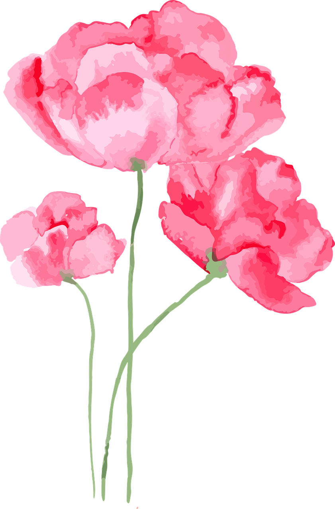

Background Info:
Hello! I’m Kavya. I’m a rising junior living in California (yes the weather is weird). I have one older brother and no pets, however I wish I had a dog. In my free time, I love reading. My favorite genre is realistic fiction or fiction and I'm obsessed with anything mystery. One fun fact about me is that I’ve gone ziplining and parasailing but I have a fear of heights. I love sunsets so below are a few pictures I've taken. Have fun looking through this website!

About the Website:
Growing up I loved math which blossomed into my love for coding. This website is a collection of the things I have created. The portfolio page has pictures and descriptions of my creations! Additionally, I've read a large collection of books from Ramona the Pest to Gone Girl. The "Book Recommendations" page has a review of a portion of the books I've read. On another note, my website is a bit flower themed because I used to plant rose bushes when I was a kid and absolutely love any type of flower.
